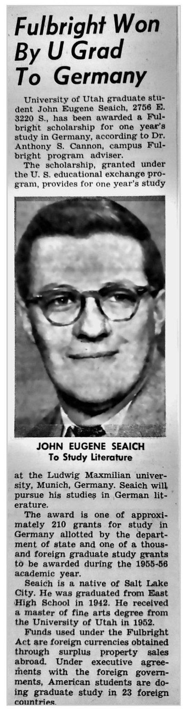

Home / Eugene Seaich
The author
Eugene Seaich
1925–2006 · Pharmacist and scholar of ancient religious texts. This biography uses only wording supported by his diploma record and the books’ own front matter.
Updated

Eugene Seaich. From the family papers.

Documented record
- Five degrees, one Ph.D. B.M. (Composition), McCune School of Music and Art, 25 May 1948; B.F.A. with High Honors, University of Utah, 9 June 1951; M.F.A., University of Utah, 22 August 1952; Ph.D. in Music, University of Utah, 9 June 1958; and a pharmacy degree from the University of Utah College of Pharmacy.
- Fulbright grantee in Germany, October 1955 to July 1956, affiliated as a student with the University of Munich.
- Phi Kappa Phi, University of Utah chapter, elected 28 February 1951.
- Lehn & Fink Gold Medal Award, University of Utah College of Pharmacy, 1965. Registered pharmacist, Utah, licensed April 1967.
- Taught at the University of Utah.
- Translations: Hugo Leichtentritt’s History of the Motet and Eduard Meyer’s Geschichte der Mormonen.
Timeline
- 1925 Born.
- 1948 B.M. in Composition, McCune School of Music and Art (teacher: Tracy Y. Cannon).
- 1951 B.F.A. with High Honors, University of Utah; elected to Phi Kappa Phi.
- 1952 M.F.A., University of Utah.
- 1955–56 Fulbright grantee in Germany, University of Munich.
- 1958 Ph.D. in Music, University of Utah (June 9).
- 1959–60 Nine dated sessions with mescaline and LSD; writes The Far-Off Land.
- 1965 Lehn & Fink Gold Medal Award, University of Utah College of Pharmacy.
- 1967 Registered pharmacist, Utah.
- 1981 Paper on the cherubim and temple symbolism for the Society for Early Historic Archaeology (BYU).
- 1994 A Great Mystery: The Secret of the Jerusalem Temple; the Gorgias Press edition carries a published endorsement from Raphael Patai.
- 2006 Dies.
- 2012 First, rough edition of The Far-Off Land, self-published by his grandson Eric Hendrickson.
- 2026 Annotated editions of The Far-Off Land, Understanding Mormonism and Ancient Texts and Mormonism.
Two lines of work
In 1959 Seaich turned to consciousness research. The Far-Off Land joins first-person observation of LSD and mescaline with what he knew of mythology, mysticism, music and the psychology of memory. In his unpublished autobiography he recalled the late 1950s as a brief, open season, when he and five university colleagues each put in ten dollars and ordered LSD by mail, Sandoz sent instructions, and Dr. Louis Goodman, co-author of the leading pharmacology text, offered advice.
“Today, any of these individuals or institutions would have immediately called for the police and had us arrested!”
His other lifelong subject was early Christianity and Latter-day Saint theology, studied through the Dead Sea Scrolls, the Nag Hammadi library, rabbinic literature and the early Church Fathers. Understanding Mormonism argues that distinguishing salvation from reward clears up much of the debate over grace and works.
Selected works
- The Far-Off Land: An Attempt at a Philosophical Evaluation of the Hallucinogenic Drug-Experience (written 1959; 2026 Annotated Edition)
- Ancient Texts and Mormonism: A Historical and Theological Study of Primitive Christianity, Early Apocrypha, Patristic Writings, and Restored Latter-day Saint Doctrine (2026 Annotated Edition)
- Understanding Mormonism: Grace, Salvation, and Ancient Religious Traditions: A Latter-day Saint Interpretation (2026 Annotated Edition)
- Comparative Symbolic Structures in Near Eastern Religious Traditions
- A Great Mystery: The Secret of the Jerusalem Temple (1994)
- Mormonism, the Dead Sea Scrolls, and the Nag Hammadi Texts
- Was Freemasonry Derived from Mormonism?